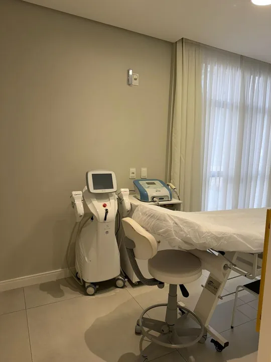
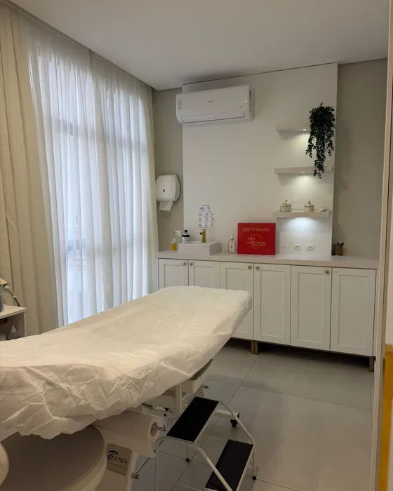
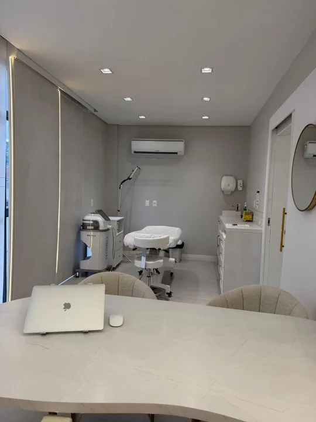

Remoções
Um sofá não sai inteiro por uma porta estreita. Quem carrega os pedaços para fora é o seu corpo.
O que é a remoção de tatuagem e micropigmentação
Uma tatuagem não fica na pele porque a tinta gruda. Ela fica porque as partículas de pigmento são grandes demais para as células de limpeza do corpo carregarem para fora, e quando uma dessas células morre, ela larga o pigmento no mesmo lugar e outra o recolhe, indefinidamente. O laser quebra essas partículas em pedaços pequenos o suficiente para saírem, e quem os leva embora, ao longo de semanas, é o sistema linfático: por isso existe intervalo obrigatório entre uma sessão e outra, e o intervalo é o tempo do transporte, não o tempo do disparo.
Dois limites vêm antes de qualquer plano. O primeiro: remoção total, no sentido de não sobrar pigmento nenhum, é o desfecho menos comum, e o que se combina no começo é reduzir a maior parte da marca, a ponto de ela deixar de ser percebida.
O segundo: cor muda tudo, porque o laser só quebra aquilo que absorve o comprimento de onda que ele emite, e não existe uma luz só que enxergue todas as cores. Preto e azul escuro são os que mais respondem. Vermelho, laranja e amarelo respondem em outra faixa. E o verde é a cor mais teimosa de todas, porque a faixa de luz que ele mais absorve não é nenhuma das duas com que se trabalha aqui. Isso não quer dizer que verde não sai: verde claro costuma responder em parte, e verde escuro pode responder em parte. Quer dizer que tatuagem com verde precisa ser olhada antes, para você ouvir o que dá para esperar dela antes de começar, e não descobrir isso na terceira sessão.
Na micropigmentação de sobrancelha, lábio e delineador a física é a mesma e a resposta é menos previsível, porque o pigmento cosmético é uma mistura formulada para dar tons de pele: por isso se faz teste em ponto pequeno antes de tratar a área inteira.
Tatuagem no corpo e micropigmentação no rosto são a mesma física e dois planos diferentes: a segunda começa sempre por um teste em ponto pequeno, e só depois pela área inteira. E dentro do próprio corpo existem dois objetivos que também não são o mesmo plano: clarear o suficiente para cobrir com um desenho novo é um caminho, e apagar até a marca não ser mais percebida é outro. Escolher qual dos dois no começo economiza sessão.
Para quem é
- Para quem calcula, antes de sair de casa, se a manga cobre.
- Para quem fez sobrancelha, lábio ou delineador e ficou com um formato ou uma cor que não consegue esconder.
- Para quem quer clarear o suficiente para cobrir com um desenho novo, e não apagar até o fim.
"Vai sair mesmo por completo, ou vai ficar uma sombra?"
Na maior parte dos casos a marca deixa de ser perceptível, e é essa a promessa que dá para sustentar. Remoção total, no sentido de não sobrar pigmento nenhum, é o desfecho menos comum, e o que se combina no começo é reduzir cerca de três quartos do pigmento, que é a expectativa que a própria literatura recomenda colocar na mesa. O material regulatório internacional diz o mesmo em linguagem direta: a remoção completa pode exigir muitos tratamentos e, em alguns casos, pode não ser possível. O que determina o desfecho é um conjunto de fatores que se lê antes de mirar: fototipo, localização no corpo, cor da tinta, quantidade de tinta e camadas sobrepostas. Uma tatuagem preta amadora no braço e uma colorida saturada com cobertura por cima são dois procedimentos diferentes, com dois prognósticos diferentes. Por isso o número estimado de sessões sai na avaliação, antes de começar, e não na terceira sessão. Quem prometer apagamento total sem ter visto a marca está vendendo, não avaliando.
Quem avalia e quem aplica é a Dra. Manu Maia, Biomédica Esteta, CRBM-5 015437. Conhecer a Dra. Manu e a clínica
Agendar avaliação de remoção


- Sessão
- 10 a 30 minutos, conforme o tamanho da área
- Rotina
- No mesmo dia, com a área vermelha e inchada, e com crosta que não se arranca
- Resultado esperado
- Clareamento parcial a cada sessão, avaliado 30 a 60 dias depois
- Duração média
- O clareamento obtido em cada sessão é definitivo e não regride
Os números acima são médias de prática clínica: a resposta é individual e o seu caso é estimado na avaliação.
Sobre a Remoção de Tatuagem
Dói muito?
Dói. A descrição mais usada, inclusive pelo material regulatório internacional, é a de um elástico fino estalando contra a pele, repetidas vezes. É uma dor pontual e rápida, não prolongada, e anestésico tópico pode ser usado. Áreas com menos tecido entre a pele e o osso incomodam mais, e sobrancelha e lábio são regiões sensíveis. O desconforto logo depois costuma ser descrito como o de uma queimadura solar localizada, e compressa fria ajuda.
Quando volto à rotina, e o que não posso fazer nos dias seguintes?
Não há afastamento. Durante a sessão a área fica esbranquiçada por cerca de 20 a 30 minutos, e depois vêm vermelhidão, inchaço e a formação de crosta. A crosta não se remove, e essa é a orientação mais importante do pós. As fontes descrevem ainda evitar sol, mar e piscina, evitar atrito na área por cerca de dez dias, usar pomada cicatrizante e protetor solar diário. Em sobrancelha, orienta-se não usar maquiagem na área por 72 horas e não fazer nenhum outro procedimento na sobrancelha entre as sessões.
Quantas sessões, e de quanto em quanto tempo?
As fontes divergem, e a divergência é honesta. Para tatuagem corporal, as referências vão de quatro a seis sessões em tatuagem amadora até oito ou mais em tatuagem profissional, com uma casuística de cem pacientes registrando média de dez sessões e faixa de três a vinte. Para micropigmentação, um levantamento com 76 pacientes de sobrancelha e pálpebra registrou média de 2,8 sessões, e as fontes clínicas brasileiras trabalham com faixas maiores. O intervalo é longo e não é negociável, indo de quatro a oito semanas conforme a fonte, e há ainda a observação de que o efeito pleno de uma sessão leva cerca de três meses para se manifestar por completo. Somando tudo, uma remoção é um projeto de meses, com frequência de mais de um ano. Encurtar o intervalo não acelera nada: sem pigmento novo disponível para quebrar, a sessão seguinte não tem alvo.
Remoção de micropigmentação de sobrancelha clareia igual à de tatuagem?
Não, e vale saber antes de marcar. A física é a mesma, mas o pigmento cosmético é outro: ele é formulado para dar tons de pele, marrom, rosa e nude, e é uma mistura, o que torna a resposta menos previsível do que a de uma tinta de tatuagem. Duas coisas podem acontecer, e as duas são de resultado. A primeira: em vez de clarear, o tom pode virar mais escuro ou acinzentado logo no começo. A segunda: quando a camada mais escura é quebrada primeiro, cores que estavam por baixo podem aparecer, vermelho, laranja, amarelo, verde ou azul. Ninguém consegue saber de fora qual pigmento foi usado na sua sobrancelha, e é por isso que a conduta é sempre a mesma: teste em ponto pequeno, reavaliação na sessão seguinte, e só então a área inteira.